Précédent : XII.5. Packages:Module 'db' | Index | Suivant : XIII. Tests | XII.6. Module 'web'
L'ensemble des mots qui composent ce package est le suivant :
accordion addcardbody addcardtitle
addcardbottom card cdropdown
completeselect divider flipcard
hdropdown overlay productcard profilecard row
sidenav slider splitter tab
tooltip topnav
Dans cette section, vous trouverez quelques exemples de widgets complexes dont vous pourrez vous inspirer pour fabriquer les votres.
Vous avez à disposition plus d'une centaine de widgets simples. Voir le chapitre précédent pour en avoir une liste exhaustive.
Mais Beetle vous offre la possibilité de créer des widgets plus complexe. Cela dépend du besoin de votre projet. Donc je vais
vous expliquer comment créer de nouveaux widgets au travers d'un exemple.
L'exemple en question est un select qui doit contenir l'ensemble de ses options et pouvoir en sélectionner un en particulier.
Voici le code Beetle de ce widget :
En préalable du code, voici ce qu'on souhaite renseigner pour afficher ce widget.
La structure qui permet de créer des options est la suivante :
* option = ["contenu_de_l'option", "valeur_de_l'option", "sélection_l'option = 'y'|'n'"]
* liste_d'option = [option*]
Voici un exemple de select qui vous permet de choisir une marque de voiture :
[ [ "Volvo" "volvo" "n" ] [ "Saab" "saab" "y" ] [ "Mercedes" "mercedes" "n" ] [ "Audi" "audi" "n" ] ] "cars" completeselect var cars
Et le code Beetle correspondant :
: completeselect
select local tempselect ( création du select qui va recevoir les options )
0 local i
0 local item
0 local opt
dup cells i
do
dup
i @ cell@ item ! ( on récupère le ième item de notre tableau )
item @ 2 cell@ item @ 1 cell@ item @ 0 cell@ option opt ! ( création du widget option )
"content" opt @ tempselect cell+ drop ( on ajoute l'option nouvellement créé au contenu du select )
loop
drop
tempselect @
;
'completeselect' est un mot qui existe dans votre package 'web'. Libre à vous d'en créer d'autres suivant le besoin de votre projet. Par exemple, vous pouvez avoir besoin d'un objet 'card' comme c'est la mode en ce moment dans les sites web. Je vous donne la solution plus bas.
Beetle vous offre également la possibilité de créer vos nouveaux widgets :
Pour réaliser ce type de widget (un peu plus complexe que 'completeselect'), il vous faut connaitre la manière dont il a été
conçu.
Tout d'abord, il est basé sur un fichier css (que vous trouverez dans le répertoire css de userarea) : 'userarea/css/card.css'.
Ceci est évidemment important car c'est ce code css qui vous permet de façonner vos cartes. Le fichier css commence par une
section .root qui regroupe un certain nombre de variables css que vous pouvez modifier à votre guise pour obtenir les cartes
qui vous conviennent. Je vous laisse aller voir le contenu de ce fichier pour comprendre un peu mieux.
Les cartes sont uniquement des divisions de la classe css : 'simple-card' qui contiennent ce que vous souhaitez.
Toutefois, Beetle vous permet de séparer en 3 parties vos cartes à votre guise avec les mots : 'addcardtitle',
'addcardbody' et 'addcardbottom'
Pour pouvoir ajouter du contenu à vos cartes, Beetle va créer une variable qui contient votre carte. La nomenclature du nom
de cette variable est simple : 'card[nom_de_la_carte]'. Dans l'exemple ci-dessous, pour la carte que j'ai nommé
'test1', Beetle créé une variable qui s'appelle 'cardtest1' et ainsi de suite.
Voici un exemple complet (car c'est plus parlant) ou nous créons 3 cartes simples :
<?btl
webreset
title "Ceci est une page pour tester les cards" addcontent
html "lang" "en" addattr
head "userarea/css/card.css" headlink addcontent
( première carte que j'appelle 'test1' )
body "test1" card
cardtest1 "titre1" addcardtitle
cardtest1 "corps1" addcardbody
cardtest1 "Add to cart" "button" button addcontent
( deuxième carte que j'appelle 'test2' )
body "test2" card
cardtest2 "titre2" addcardtitle
cardtest2 "corps2" addcardbody
cardtest2 "Add to cart" "button" button addcontent
( troisième carte que j'appelle 'test3' )
body "test3" card
cardtest3 "titre3" addcardtitle
cardtest3 "corps3" addcardbody
cardtest3 "Add to cart" "button" button addcontent
html @ generate cls
?>
Voici ce que cela donne dans votre navigateur préféré :
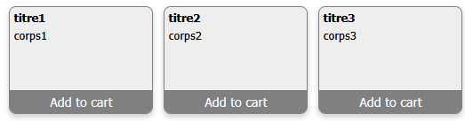A titre d'exemple, voici le code du mot 'card' :
: card
local name ( on récupère le nom de la carte )
"card<#0#>" [ name @ ] format local newname ( on modifie le nom du widget )
name @ div "var <#0#>" [ newname @ ] format evaluate ( on créé la division qui va bien )
newname @ "class" "simple-card" addattr drop ( on ajoute le bon attribut class à la division )
newname @
;
Ce widget est conçu de la même manière que pour les cartes simples.
Il est basé sur un fichier css (que vous trouverez dans le répertoire css de userarea) : 'userarea/css/flipcard.css'.
Le fichier css commence par une section .root qui regroupe un certain nombre de variables css que vous pouvez
modifier à votre guise pour obtenir les cartes qui vous conviennent. Je vous laisse aller voir le contenu de ce fichier pour
comprendre un peu mieux.
Les cartes sont uniquement des divisions de la classe css : 'flip-card' qui contiennent une autre division transparente
pour vous don la classe css est 'flip-card-inner'. Cette division existe pour implémenter les transitions et l'effet 3D du
widget. A l'intérieur de cette nouvelle division, vous allez retrouver 2 sections : une qui représente le devant de la cartes
et l'autre qui présente l'arrière de la carte. ce sont ces 2 divisions que vous allez utiliser et remplir des objets qui
vous interresse de voir.
Toutefois, Beetle vous permet de mélanger les objets d'une carte simple avec une flip card en utilisant les divisions mises
à disposition pour 'card' avec les mots : 'addcardtitle', 'addcardbody' et 'addcardbottom'
Pour pouvoir ajouter du contenu à vos cartes, Beetle va créer 2 variables pour le devant et l'arrière de votre carte.
La nomenclature du nom
de ces variables est simple : 'fcf[nom_de_la_carte]' pour le devant et 'fcb[nom_de_la_carte]' pour l'arrière.
Dans l'exemple ci-dessous, pour la carte que j'ai nommé 'flip1', Beetle créé 2 variables qui s'appellent 'fcfflip1' et
'fcbflip1'.
Voici un exemple complet ou nous créons 2 flip cartes que je nomme 'flip1' et 'flip2' :
<?btl
webreset
title "Ceci est une page pour tester les cards" addcontent
html "lang" "en" addattr
head "userarea/css/flipcard.css" headlink addcontent
( première carte que j'appelle 'flip1' )
body "flip1" flipcard
fcfflip1 1 "Recto" maintitle addcontent
fcbflip1 1 "Verso" maintitle addcontent
fcbflip1 "Add to cart" "button" button addcontent
( première carte que j'appelle 'flip2' )
body "flip2" flipcard
1 "Recto" maintitle var rectotext
rectotext "style" "line-height:150px;" addattr ( centrage vertical du texte )
fcfflip2 rectotext addcontent
1 "Verso" maintitle var versotext
versotext "style" "line-height:150px;" addattr ( centrage vertical du texte )
fcbflip2 versotext addcontent
forget rectotext
forget versotext
html @ generate cls
?>
Voici ce que cela donne dans votre navigateur préféré :
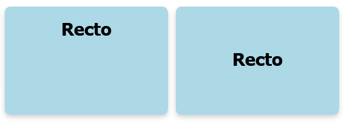A titre d'exemple, voici le code du mot 'flipcard' :
: flipcard
local name
name @ div local flipcard
flipcard "class" "flip-card" addattr
flipcard "fci<#0#>" [ name @ ] format div local cardinner cardinner @ addcontent
cardinner "class" "flip-card-inner" addattr
cardinner "fcf<#0#>" [ name @ ] format div "var fcf<#0#>" [ name @ ] format evaluate @ addcontent
"fcf<#0#>" [ name @ ] format "class" "flip-card-front" addattr
cardinner "fcb<#0#>" [ name @ ] format div "var fcb<#0#>" [ name @ ] format evaluate @ addcontent
"fcb<#0#>" [ name @ ] format "class" "flip-card-back" addattr
flipcard @
;
Dans le même principe que pour les widgets précédents, ce composant est basé sur un fichier css et un fichier
javascript (js) (que vous trouverez dans le répertoire css de userarea) : 'userarea/css/splitter.css' et
'userarea/js/splitter.js'.
Ces fichiers doivent être impérativement dans les pages qui utilisent ce
widget.
Le fichier css commence par une section .root qui regroupe un certain nombre de variables css que vous pouvez
modifier à votre guise pour obtenir les splitters qui vous conviennent. Je vous laisse aller voir le contenu de ce fichier pour
comprendre un peu mieux.
Vous pouvez utiliser plusieurs types de splitters dans la même page. Un exemple vous est présenté plus bas.
Les splitters sont directement ajoutés au container de votre choix.
La position des splitters est mémorisée dans le 'local storage' de votre navigateur. Ceci vous permet lors d'un
rechargement de la page de retrouver vos splitters à l'endroit ou vous les avez laissé.
La syntaxe de ce mot est la suivante :
container "nom_du_splitter" "vertical | horizontal" splitter
Voici un exemple de ce que cela donne en enchainant un splitter vertical et un splitter horizontal :
<?btl
webreset
title "Page pour tester les splitters" addcontent
html "lang" "en" addattr
head "userarea/css/splitter.css" headlink addcontent
head "sync" "userarea/js/splitter.js" headscriptfile addcontent
head "body { margin: 0; height: 100vh; display: flex; }" style addcontent ( ceci est indispensable pour obtenir
le visuel montré plus bas )
body "vsplit" "vertical" splitter
vsplitleft "left zone" addcontent
vsplitright "hsplit" "horizontal" splitter
hsplittop "top zone" addcontent
hsplitbottom "bottom zone" addcontent
html @ generate cls
?>
Voici ce que cela donne dans votre navigateur préféré :
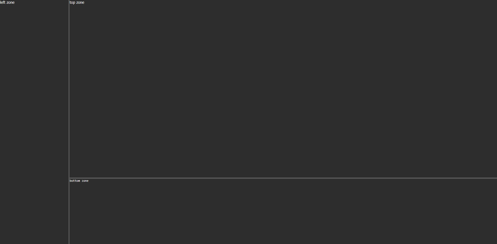Un divider est une séparation de type hr uniquement. Ce mot vous propose plusieurs séparations possibles dont les caractéristiques sont les suivantes :
La syntaxe du mot 'divider'est la suivante :
container "nom_du_divider" "caractéristique" divider
Un fichier css (divider.css) est à disposition qui regroupe ces caractéristiques. Voici un exemple :
<?btl
webreset
title "Page pour tester les dividers" addcontent
html "lang" "en" addattr
head "userarea/css/divider.css" headlink addcontent
body "sep1" "double" divider
body "sep2" "dashed" divider
body "sep3" "dotted" divider
body "sep4" "solid" divider
body "sep5" "rounded" divider
html @ generate cls
?>
Voici ce que cela donne dans votre navigateur préféré :
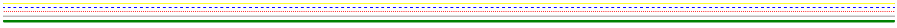
Ce composant est basé sur un fichier css et un fichier javascript (js) (que vous trouverez dans le répertoire css de userarea) :
'userarea/css/tab.css' et 'userarea/js/tab.js'.
Ces fichiers doivent être impérativement dans les pages qui utilisent ce widget. Le fichier js doit également être chargé avec l'attribut 'sync'
car le code js n'a pas besoin d'être exécuté après le chargement du html.
Le fichier css commence par une section .root qui regroupe un certain nombre de variables css que vous pouvez
modifier à votre guise pour obtenir les tabs qui vous conviennent. Je vous laisse aller voir le contenu de ce fichier pour
comprendre un peu mieux.
Vous pouvez utiliser plusieurs types de tabs dans la même page. Un exemple vous est présenté plus bas.
Les tabs sont directement ajoutés au container de votre choix.
Pour pouvoir ajouter du contenu à vos tabs, Beetle va créer une variable pour chaque panneau de votre 'tab'. La nomenclature du nom
de ces variables est simple : '[nom_du_tab]tab[0|1|...]'.
Dans l'exemple ci-dessous, pour le tab que j'ai nommé 'tt1' qui comporte 4 panneaux, Beetle créé 4 variables qui s'appellent
'tt1tab0', 'tt1tab1', 'tt1tab2' et 'tt1tab3'.
La syntaxe de ce mot est la suivante :
container [ [ "active_color" "texte_de_l'onglet" ] ... ] Numéro_de_l'onglet_ouvert "nom_du_composant" "top | left" tab
Voici un exemple de ce que cela donne en enchainant un 'tab' top et un 'tab' left :
<?btl
webreset
title "Page pour tester les tabs" addcontent
html "lang" "en" addattr
head "userarea/css/tab.css" headlink addcontent
head "sync" "userarea/js/tab.js" headscriptfile addcontent
body [ [ "#bbb" "London" ] [ "#ccc" "Paris" ] [ "#ddd" "Tokyo" ] [ "salmon" "Berlin" ] ] 0 "tt1" "top" tab ( les onglets se retrouvent en haut )
tt1tab0 "Onglet de la ville de Londres" addcontent
tt1tab1 "Onglet de la ville de Paris" addcontent
tt1tab2 "Onglet de la ville de Tokyo" addcontent
tt1tab3 "Onglet de la ville de Berlin" addcontent
body [ [ "green" "Dacia Duster" ] [ "red" "Audi" ] [ "blue" "Volvo" ] [ "yellow" "Renault" ] ] 0 "tt2" "left" tab ( les onglets se retrouvent à gauche )
tt2tab0 "Onglet des Dacia" addcontent
tt2tab1 "Onglet des Audi" addcontent
tt2tab2 "Onglet des Volvo" addcontent
tt2tab3 "Onglet des Renault" addcontent
html @ generate cls
?>
Voici ce que cela donne dans votre navigateur préféré :
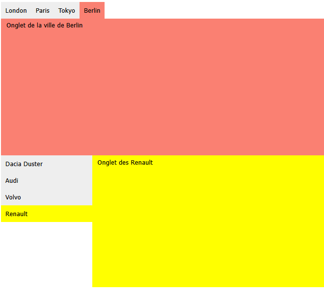
Le but du mot 'accordion' est de vous permettre d'intégrer un accordéon dans vos page html.
Ce composant est basé sur un fichier css et un fichier javascript (js) (que vous trouverez dans le répertoire css de userarea) :
'userarea/css/accordion.css' et 'userarea/js/accordion.js'.
Ces fichiers doivent être impérativement dans les pages
qui utilisent ce widget. Le fichier js doit également être chargé avec l'attribut 'defer'. Ceci est important car le code javascript
doit être exécuté après le chargement de votre page html.
Le fichier css commence par une section .root qui regroupe un certain nombre de variables css que vous pouvez
modifier à votre guise pour obtenir les accordéons qui vous conviennent. Je vous laisse aller voir le contenu de ce fichier pour
comprendre un peu mieux.
Vous pouvez utiliser plusieurs accordéons dans la même page. Les accordéons sont directement ajoutés au container de votre choix.
La syntaxe de ce mot est la suivante :
container [ "section 1" ... ] "nom_de_l'accordéon" accordion
Voici un exemple de ce que cela donne en enchainant un splitter vertical et un splitter horizontal :
<?btl
webreset
title "Page pour tester les accordéons" addcontent
html "lang" "en" addattr
head "userarea/css/accordion.css" headlink addcontent
head "defer" "userarea/js/accordion.js" headscriptfile addcontent ( l'exécution de ce fichier doit être reportée à la fin du chargement du html )
body [ "Section 1" "Section 2" "Section 3" ] "acc1" accordion
acc1panel0 "Contenu de la section 1" addcontent
acc1panel1 "Contenu de la section 2" addcontent
acc1panel2 "Contenu de la section 3" addcontent
html @ generate cls
?>
Voici ce que cela donne dans votre navigateur préféré :
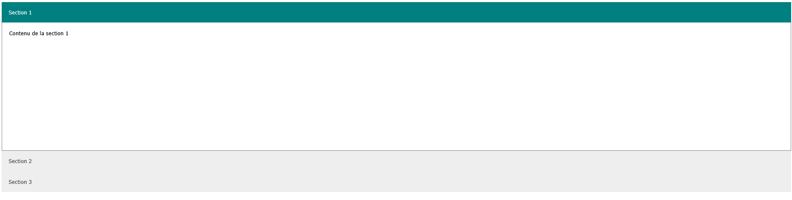La syntaxe de ce mot est la suivante :
container [ [ "href" "texte_de_l'item" ] ... ] "type_de_sidenav" "nom_du_sidenav" sidenav
Voici un exemple de ce que cela donne :
<?btl
webreset
title "Page pour tester les sidenav" addcontent
html "lang" "en" addattr
head "userarea/css/sidenav.css" headlink addcontent
head "normal" "userarea/js/sidenav.js" headscriptfile addcontent<
body [ [ "#home" "Home" ] [ "#news" "News" ] [ "#contact" "Contact" ] [ "#about" "About" ] ] "push" "snp" sidenav
snpmain "Sidenav Main content" addcontent
html @ generate cls
?>
Voici ce que cela donne dans votre navigateur préféré :
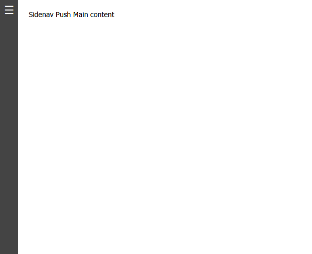 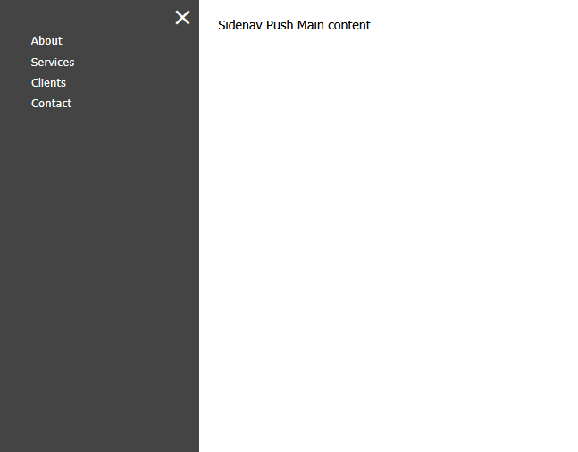La syntaxe de ce mot est la suivante :
container [ [ "href" "texte_de_l'item" ] ... ] "fixed | notfixed" index_item_par_défault "nom_du_topnav" topnav
Voici un exemple de ce que cela donne :
<?btl
webreset
title "Page pour tester les menus" addcontent
html "lang" "en" addattr
head "userarea/css/topnav.css" headlink addcontent
head "defer" "userarea/js/topnav.js" headscriptfile addcontent
body [ [ "#home" "Home" ] [ "#news" "News" ] [ "#contact" "Contact" ] [ "#about" "About" ] ] "notfixed" 0 "tn" topnav
html @ generate cls
?>
Voici ce que cela donne dans votre navigateur préféré :
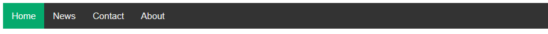Il existe de base un mot pour créer une table. Ce mot est 'table'. Mais ce mot vous permet uniquement de créer le tag 'table'. 2 actions sont nécessaires pour compléter votre table :
Pour le bon fonctionnement de votre table, il est nécessaire inclure dans votre page les fichiers 'css' et 'js' qui vont bien. Ces fichiers se situent ici : 'userarea/css/tables.css' et 'userarea/js/tables.js' come cela est fait dans l'exemple donné ci-dessous.
Pour créer une légende à votre table, c'est très simple. Si 't' est une variable contenant votre table et 'capt' la legende de votre table, voici comment faire :
"Ceci est la légende de mon tableau" caption var capt
capt "class" "tablecaption" addattr
t capt addcontent
Ensuite, pour ajouter ou non les fonctions de filtrage et de tri et pour ajouter des cellules, c'est le mot 'row' qui va vous permettre de faire cela.
La syntaxe de ce mot est la suivante :
container [ [ "sort | nosort" "filter | nofilter" "entête_de_colonne_ou_de_ligne? col | row" "contenu_de_cellule" facultatif_colspan facultatif_rowspan ] ... ] row
Voici un exemple de ce que cela donne :
<?btl
webreset
title "Page pour tester les tables avec filtres et tris" addcontent
html "lang" "en" addattr
head "userarea/css/tables.css" headlink addcontent
head "defer" "userarea/js/tables.js" headscriptfile addcontent
"t1" table var t
t "class" "tableall" addattr
"Ceci est la légende de mon tableau" caption var c ( je peux choisir comme nom de variable c car je n'ai pas importé le module 'math'. 'c' est une constante qui désigne la vitesse de la lumière )
c "class" "tablecaption" addattr
t c addcontent
t [ [ "sort" "filter" "col" "cell1" ] [ "nosort" "filter" "col" "cell2" ] [ "nosort" "filter" "col" "cell3" ] ] row
t [ [ "nosort" "nofilter" "row" "cell4" ] [ "cell5" ] [ "cell6" ] ] row ( pas de rowspan, ni de colspan donc pas renseigné ici )
t [ [ "nosort" "nofilter" "row" "cell7" 2 0 ] [ "cell8" ] ] row ( rowspan = 2, colspan = 0 les 2 valeurs sont facultatives en même temps )
t [ [ "cell9" ] [ "cell10" ] [ "cell11" ] ] row
body t addcontent
html @ generate cls
?>
Voici ce que cela donne dans votre navigateur préféré :
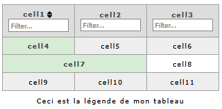Les modales vous permettent d'ouvrir une 'sorte' de fenêtre en bloquant ce qui est derrière la modale. le seul moyen de quitter la modale et de revenir à la situation initiale est de cliquer sur la croix de la modale.
La syntaxe de ce mot est la suivante :
container "contenu_du_bouton_qui_ouvre_la_modale" "titre_de_la_modale" "nom_de_la_modale" modal
Voici un exemple de ce que cela donne :
<?btl
webreset
title "Page pour tester les modales" addcontent
html "lang" "en" addattr
head "userarea/css/modal.css" headlink addcontent
head "sync" "userarea/js/modal.js" headscriptfile addcontent
body "Open Modal" "Titre de la modale" "myModal" modal
myModalcontent "Un peu de texte dans cette modale..." paragraph addcontent
html @ generate cls
?>
Voici ce que cela donne dans votre navigateur préféré :
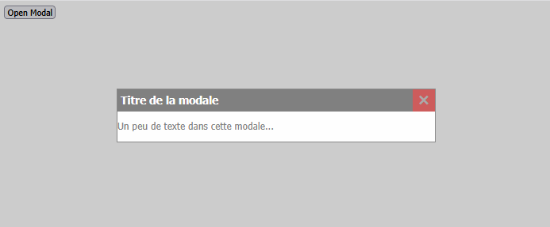Ce widget vous permet de mettre en place un dropdown (petit menu) sur un bouton qui s'ouvre quand vous passez la souris dessus et qui se ferme dès que la souris sort de la zone. Le 'h' du mot 'hdropdown' veut dire 'hover'.
La syntaxe de ce mot est la suivante :
container "nom_du_dropdown" "contenu_du_bouton" [ [ "contenu_du_lien" "lien" ] ... ] hdropdown
Voici un exemple de ce que cela donne :
<?btl
webreset
title "Page pour tester les hover dropdowns" addcontent
html "lang" lang? addattr
head "userarea/css/hdropdown.css" headlink addcontent
body "dd" "Dropdown" [ [ "Link 1" "#link1" ] [ "Link 2" "#link2" ] [ "Link 3" "#link3" ] ] hdropdown
html @ generate cls
?>
Voici ce que cela donne dans votre navigateur préféré :
Ce widget vous permet de mettre en place un dropdown (petit menu) sur un bouton qui s'ouvre quand vous cliquez dessus et qui se ferme quand vous cliquez n'importe où dans la page. Le 'c' du mot 'cdropdown' veut dire 'clickable'.
La syntaxe de ce mot est la suivante :
container "nom_du_dropdown" "contenu_du_bouton" [ [ "contenu_du_lien" "lien" ] ... ] cdropdown
Voici un exemple de ce que cela donne :
<?btl
webreset
title "Page pour tester les hover dropdowns" addcontent
html "lang" lang? addattr
head "userarea/css/cdropdown.css" headlink addcontent
body "dd" "Dropdown" [ [ "Link 1" "#link1" ] [ "Link 2" "#link2" ] [ "Link 3" "#link3" ] ] cdropdown
html @ generate cls
?>
Voici ce que cela donne dans votre navigateur préféré :
Ce widget vous permet de mettre en place un slider qui va, lui, vous permettre de sélectionner une valeur.
La syntaxe de ce mot est la suivante :
container minimum maximum initial_value "slider_type (slider|default)" "slider_name" slider
Voici un exemple de ce que cela donne :
<?btl
webreset
title "Page pour tester les sliders" addcontent
html "lang" lang? addattr
head "userarea/css/slider.css" headlink addcontent
body 0 100 45 "slider" "s1" slider
body br addcontent
body br addcontent
body 0 100 10 "default" "s2" slider
html @ generate cls
?>
Voici ce que cela donne dans votre navigateur préféré :
Ce widget vous permet d'afficher au passage de la souris un tooltip (petite zone d'information)'.
La syntaxe de ce mot est la suivante :
container "type (top, right, bottom, left)" "tooltip_text" tooltip
Voici un exemple de ce que cela donne :
<?btl
webreset
title "Page pour tester les tooltips" addcontent
html "lang" lang? addattr
head "userarea/css/tooltip.css" headlink addcontent
"divtooltip" div var divtooltip
divtooltip "Hover over me" addcontent
divtooltip "style" "margin-left:20px;" addattr
divtooltip "top" "Tooltip text" tooltip
body br addcontent
body br addcontent
body divtooltip addcontent
html @ generate cls
?>
Voici ce que cela donne dans votre navigateur préféré :
Précédent : XII.5. Packages:Module 'db' | Index | Suivant : XIII. Tests | XII.6. Module 'web'